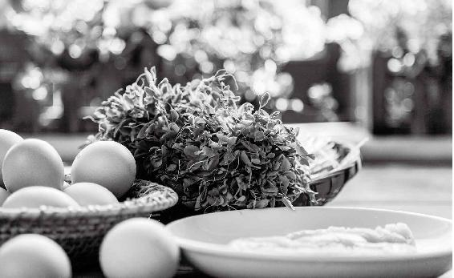

百病从湿生。

问：从湖南去广州要坐车10多个小时，因为异地有温差，路途中应该注意什么？我们需要提前做好哪些准备呢？
允斌答：像这种出门、长途旅程要坐车的情况，我们首先要注意避开“虚邪贼风”。我建议：
第一，最好是戴帽子，围好围巾，穿厚实的衣服。在飞机或是火车上，我一般会把通风口关掉。如果旁边有人需要开着通风口，我会用围巾把自己裹得严严实实的，避免自己头部受风。
第二，提前准备好书中讲的香菜陈皮姜水（芫香散寒饮），到达目的地后，马上喝一杯，这样能帮助您散掉途中所受的寒气。
第三，给大家分享我的一个经验，我并不是现在疫情期间才这样做，而是一直以来都有这个习惯。2019 年 12 月底（据医学界事后研究显示，那时新冠病毒已在武汉传播至少有一个月了， 只是人们还不知道），我去过湖北讲课，当时讲课的地点距离武汉市是非常近的。当时武汉已经出现新冠肺炎病例了。在讲课期间，我接触了很多湖北当地人，也有一些读者是从武汉赶过来听讲座的，他们拿了我的书来请我签名，我与他们近距离地交谈，站在一起合影；我还去考察了当地的集市、古镇。讲完课后，我回程时在武汉高铁站候车，元旦放假前，高铁站的人流量是非常大的。我乘坐 6 小时高铁先到天津录电视台节目，之后又从天津返回北京。
在这样一个过程中，为什么我没有被感染呢？当然，也有可能是我运气好。这里，我想分享的是，无论何时我都非常注意防护，比如我每日回到酒店，第一件事是用酒精棉球给手机消毒，这是长年养成的习惯；比如在高铁上，如果我去洗手间，我不会直接用手接触门把手，我会用一张纸巾，隔着纸巾去握门把手，再开门，然后我也会马上洗手。平时注意这样一些细节，能够非常有效地帮助我们防范病毒的感染。
问：大人上班，孩子上学，该做好哪些防护？
允斌答：第一，我建议使用香包。给自己和孩子都做一个，（没有办法买药的话）就用能找到的所有带有芳香味的中药，搭配在一起，让药香始终围绕在自己和孩子的鼻端，这样能够刺激鼻黏膜产生抗体，同时也能净化身体周围的空气。
第二，用能买到的一些带有芳香味的中药做成坐垫，带到办公室、学校里。这也是一种有效的保护方法。
第三，在下班、孩子放学回家后，可以喝一碗香菜陈皮水（芫香行人饮），用于抗病毒。我要提醒一点，在外面的时候最好不要喝太多香菜陈皮水，因为它是帮助我们身体往外发散的。如果在室外遇到降温、雨雪天气，喝了它后，身体毛孔打开，反而会受寒。最好是回家后，或到办公室、学校再喝。
我建议在办公室，准备一个养生茶壶煮水喝，保持茶壶里一直煮着芳香化湿的中药，比如香菜、陈皮，让它一直“咕嘟”着。这样，在您周围会形成很好的空气环境，同时还可以不时喝一点，增强身体抵抗力。
问：家里有小孩子，需要每日多次拖地消毒吗？会不会有害处？不接触细菌，会不会影响孩子的免疫力？
允斌答：这个问题问得很有代表性。我们家就发生过这样一个事故。我家阿姨平常非常注意卫生，尤其是最近疫情比较严重，她就在涮拖把的水里加了一点84消毒液，然后再拖地。我们全家人闻到后，都觉得实在无法忍受这个味道。其实，这次新冠肺炎是由病毒引起的，病毒跟细菌有很大的不同，病毒需要宿主才能够生存。如果没有来访客人，地面是没有必要消毒的。
我告诉阿姨，没有必要用84消毒液来拖地消毒，84消毒液挥发到空气中对孩子身体是不好的。
不接触到细菌会不会影响孩子的免疫力呢？放心吧！不管用不用84消毒液，哪怕用再多，家里还是会有细菌。细菌是无处不在的，我们身体内也都有细菌，所以不用太过担心这个问题。
问：买不到酒精怎么办呢？
允斌答：我听朋友说，现在去药店都买不到医用酒精了。我希望大家注意：酒精是每家每户必备的，不要等到发生疫情才去抢购。我们应该每日都用酒精消毒，只要我外出或者出差，回到宾馆房间，或者回到家里，我一定会用酒精棉擦拭我的手机，擦得干干净净，这样才会放心。很多年了，我一直保持着这个习惯，因为手机上的细菌是最多的。很多人容易感冒，或者没缘由地眼睛发红、细菌感染，都可能是对手机的消毒不重视造成的，所以一定要注意。
如果现在买不到酒精怎么办呢？可以用蒜。大蒜是可以代替酒精消毒的，它的消毒效果非常好。我曾经在书里写过，在困难年代是没有酒精消毒的，那么孩子们打预防针时怎么办呢？就是把大蒜切成两瓣，用它擦拭后，直接打针，都没事的。所以，你也可以用大蒜来消毒的，做成大蒜水。
问：在这个特殊时期，孕妇必须出门时，有什么方法可以预防病毒呢？
允斌答：从外部防护来说，孕妇预防病毒的方法和前文说到的是一样的，孕妇也是普通人，不要把自己搞得特别紧张，特别害怕。
从内部防护来说，为什么孕妇要特别加强防范呢？孕妇是易感人群，而且如果生病就不方便吃药。所以孕妇如果得了呼吸道方面的疾病，用食疗是比较安全的。
顺便说一下，我建议孕妇平时不要对饮食太过担心。每次我分享一些食方后，一定会有人留言问我：“这个食方孕妇能不能吃？”我真的很难回答。为什么呢？比如说我分享的食方材料是香菜、萝卜，或是喝点杂粮粥，也会有人问孕妇能不能吃。如果这些是平时可以吃的，那么孕期一般也是可以吃的。当然，因为孕期的情况复杂多变，可能会有一些非常特殊的孕妇，即使她什么都没吃，也有可能出现某些问题。所以对于网上留言，由于不了解对方的具体情况，我回答就很为难。我建议，如果孕妇自身有特殊情况，那么凡事都要遵医嘱；如果是正常健康的孕妇，如果食方没有注明孕妇禁用，一般都是可以用的。如果有孕妇禁用的情况，食方会注明的，比如说甘草陈皮梅子汤里有一味山楂，我每次都会注明，孕妇不要吃山楂，要把山楂挑出来；还有马齿苋、薏米，孕妇也不要吃。其他家常的食材，几乎都是可以用的。
问：嗓子肿痛，咳嗽有黄痰，又恰逢生理期，这种情况怎么办？
允斌答：这种情况比较难办。因为嗓子肿痛又有黄痰，这是有热证，是要用到凉药的；可又是生理期，很多茶方都不能喝。但我说，还是要先去调理嗓子肿痛和黄痰的问题，适当少用一点凉药，比如说可以用西红柿拌白糖（见《回家吃饭的智慧》。具体做法：把西红柿切成小块，拌上点白糖，搅出汁，喝下去就可以），这个食方相对来说比较温和，或者泡一杯绿茶加菊花来喝，但不要多喝。
我特别建议大家，在生理期之前，一定要注意保暖。其实我们很多时候生病，都是自己找的，本来是可以不生病的。我看到现在很多年轻人，他们之所以生病，就是因为少穿了一件衣服，或者吹了风，或者是在火车、飞机上没有关掉旁边的通风口而受风、受寒生病。
我现在是在北京，在自己的家里，我旁边就是暖气，可是我还穿着棉袄，里面还有毛衣，我还穿了棉裤。为什么我穿这么多呢？并不是我真的怕冷，是因为我希望自己暖暖的。我们先让自己的身体暖暖的，才不容易被病毒侵袭。
问：年前得了流感，按照允斌老师的方法，用鱼腥草、牛蒡加上梅子汤，及时地在早期战胜了流感。目前感觉吸气、呼气时，气管有痒的感觉，想咳，喉咙痒，无痰，请问老师该如何调理呢？
允斌答：在这种情况下，我估计你可能是有咽炎，我建议你用我书中讲到的方法，把大蒜切碎后，加一点点蜂蜜和一点点水，上锅蒸 8 分钟。这样坚持喝几次，看看效果怎么样。
问：这次肺炎疫情与湿气有关，湿气怎么才能祛除呢？
允斌答：说真的，湿气是比较难祛除的。打个比方，如果我们把一盆面粉加上水，和成了面团，你再想把它分成水和面粉，可能吗？几乎是做不到的。
那么湿气如果进入我们的身体，时间长了以后，就像水和面粉一样混合在一起，你再想恢复原状，真的是千难万难。
古人说“千寒易去，一湿难除”，所以我们真的不要着急。湿气在我们体内积累不是一天两天的事，非一日之湿；我们要想祛除湿气，也不是一天两天的事情。
你要记住，在我们祛除已有湿气的时候，我们身体还在不断地产生新的湿气。
比方说，久坐也是现代人容易生湿的一个重要原因。看过我做直播或是听过我讲座的朋友都知道，不管在全国各地哪里讲课，哪怕讲三天、七天，我也是从早到晚站着，绝不坐下。为什么？因为久坐生湿。
所以我每次讲课时，也都会鼓励大家站起来，站着听课。我在家里也是能站时绝不坐的，哪怕我在工作、写稿子的时候，都是站着打字的，这样有助于预防身体产生湿气。
很多时候，当我们一边做着祛湿的努力，我们的一些不良生活习惯和饮食习惯也在同时给身体增加新的湿气。就像小时候做的数学题：有个水池，一边在放水，另一边进水，问什么时候才能把水池里的水放尽呢？这就取决于你进水和放水的速度，到底谁能够胜过谁了。
问：现在疫情这么严重，儿童易发热，家长就更慌了。请老师讲讲儿童防范病毒的方法吧！
允斌答：其实儿童如果发热、感冒、咳嗽，甚至发展成肺炎，它的诱发因素很简单，一般情况下有两种：一是积食，二是受寒了。
家长要记住，孩子受寒和我们大人是不一样的。给孩子防寒，一定要防的是头部。小朋友在冬春季节出门时，给他戴个帽子，不要太厚，主要是防寒。
孩子如果能够不受风寒、不积食，基本上身体就会很健康，不会出现发热、咳嗽的。
孩子如果发热、咳嗽了怎么办呢？首先给他去除积食。我建议，孩子一开始咳嗽时，你马上给他做个火烧红橘吃。在橘子上捅一个小眼，加入一点点油，放在火上烧。烧焦了以后，吃里面的橘肉，这是治轻咳的；如果感觉咳起来了，就给他喝大蒜水，把大蒜切碎，加点蜂蜜，蒸8分钟后喝。如果孩子发低烧，通常来说就是受寒了，这种情况喝葱姜陈皮水是非常管用的；如果是发高烧，就用蚕沙、竹茹、陈皮各10克煮水喝，很快就可以退热。
问：老师，您推荐了一些食方和预防方，但有必要一天喝这么多水吗？
允斌答：要注意，我推荐的有代茶饮，也有食方。代茶饮就是喝的水，你可以少煮一点。一剂药你煮多少水，是按自己的喝水量来定的，但材料的用量不要减少。按照材料的用量，你少加一点水来煮，就可以了。
问：我们坚持做防护工作要持续多久？
允斌答：防护工作肯定是要做到疫情平息后，但我的建议是，顺时养生的保健方法，持续一辈子吧！
因为我们的养生，真的不是只在有疫情的时候才来进行，而是平时就要去做。顺时生活，顺应着节气的变化而生活。
问：老师，我们现在买到的都是大棚蔬菜，它们有抗病毒的功效吗？
允斌答：跟天然的相比，抗病毒的功效肯定是要差一点了，但是总归是蔬菜吧。另外，去外面挖野菜时，不要去公路边挖，有汽车尾气的污染，所以只能去山里面。对此，我也无能为力。
我的建议是自己种野菜，我也没办法去外面挖野菜，只是在花盆里种一点，放在阳台上，它们很容易长起来。
问：买了好多种绿豆，但是能发出芽的绿豆很少，老师有挑选技巧吗？
允斌答：我买的绿豆一般都能发芽。记住，你一定要找好的地方买能发芽的绿豆。或者是你发芽的方法不对，绿豆在泡了水以后，要放在比较暖和的地方。
问：既然这次疫病主要与湿气有关，喝您的哪几款祛湿茶效果会更好呢？
允斌答：这位朋友所说的祛湿茶应该指的是荷叶陈皮茶、荷叶冬瓜皮茶，这是我配的两款以荷叶为主的祛湿茶，都是可以喝的。
问：回家后用酒精喷洒消毒外套、鞋子可以吗？
允斌答：如果我去了公众场合，我一般都会与人保持距离；不仅是在疫情期间，平时我也会跟陌生人保持距离。但是如果真的在一个非常狭窄的地方，被人家挤到了，我回家后会把衣服全都洗掉，我们家也常备洗衣服的消毒液，加一点点就可以。
但是如果你在外面并没有跟陌生人有近距离的接触，回家以后，尤其是冬天的外套不想洗的话，我建议不一定喷酒精，把衣服挂在阳台上就可以。我一般会把大衣挂在阳台上，晒太阳、通风，这样是可以消毒的。
问：避疫香包多长时间需要更换？
允斌答：香包的更换时间，通常看香味的持续时间。如果你做一个香包，散开口来用，它的香味散得很快，两三个星期就觉得味道不浓了，你就可以换。
如果你扎紧口来用的话，它发挥功效的时间很长。即使香包只剩一点味道了，它里面的中药对我们还是有作用的。可以把里面的中药粉取出来熏香，或者直接点燃熏房间来净化空气。
问：现在为什么会失眠呢？
允斌答：立春前后，有些人就会失眠，而且这种失眠往往表现为半夜醒来，或者是早上醒得很早。这种情况往往跟我们的肝火有关系，我建议你多喝桑叶茶，用霜桑叶泡水来喝，你会发现，甚至有的人只喝一天，就会感到失眠有所缓解了。大家可以试一试。
问：在《顺时生活》健康日历中，有写到某个时期需要注意的健康问题，是否可以通过食方来避免？
允斌答：是的。每次我写这个节气需要注意什么健康问题时，也会建议一些食方，这就表明，这个食方对调理这些健康问题是有帮助的。